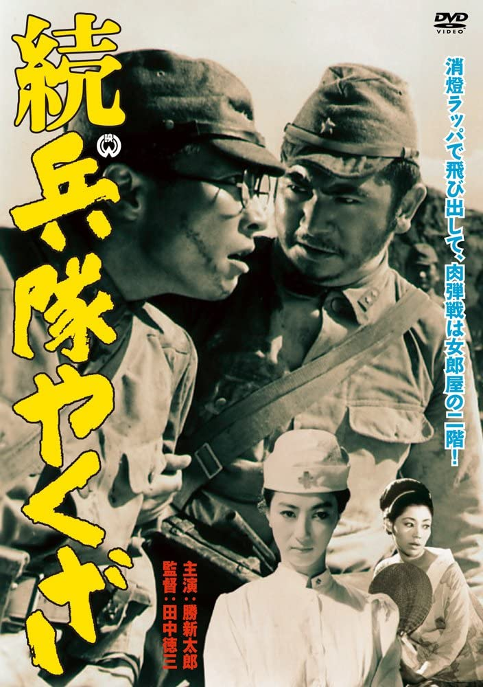

字幕仅供个人兴趣学习，不得商业化和付费。如有其他字幕翻译是基于我提供的字幕，敬请标明出处。
Note:
Subtitles are only for personal use, no commercialized purpose or distribution for money. If you want to share them, please include proper ciation(s) to my site. If you want to translate to other languages based on the subtitles I provide, please cite the source in your subtitle. Thanks.

续军中黑道/続兵隊やくざ(Zoku Heitai Yakuza/Hoodlum Soldier and the C.O./Hoodlum Soldier 2) 是田中徳三于1965年导演，胜新太郎/田村高广主演的电影。是<军中黑道>系列的第2部作品。英文字幕由coralsundy自费出资，jls001999听译制作完成。有少许错漏和语句不够流畅，可全程完整欣赏电影，适用于01:31:20的版本。字幕仅供个人兴趣学习，不得商业化和付费。
Zoku Heitai Yakuza / Hoodlum Soldier and the C.O. / Hoodlum Soldier 2 (1965) is a 1965 movie directed by Tokuzo Tanaka, with notable stars Shintaro Katsu and Takahiro Tamura. This is the 2nd movie in the series.
Translation/Subtitle: jls001999 (jls001999@gmail.com)
Review/Proofreading: coralsundy (coralsundy@gmail.com)
(Paid by coralsundy for the translation, personal use only)
中文字幕: 尚无
English Subtitle: Zoku.Heitai.Yakuza.aka.Hoodlum.Soldier.2.1965.eng.01-31-20.BYjls001999.rev2.srt
(Update 20220515: rev2 fixed a few typos and errors)
Heitai Yakuza / Hoodlum Soldier 1 subtitle: https://subhd.tv/a/530442 (Take from the internet I can remove it if the sub creator complains)
SUBHD: https://subhd.tv/a/530443
IMDB: https://www.imdb.com/title/tt0188305/
DOUBAN: https://movie.douban.com/subject/20463161/
More Movie Subtitles on My Website: CLICK HERE
续·军中黑道 / 続·兵隊やくざ / Zoku Heitai Yakuza / Hoodlum Soldier and the C.O. aka Hoodlum Soldier 2 1965 Subtitle (English) is published on 2022-02-14.